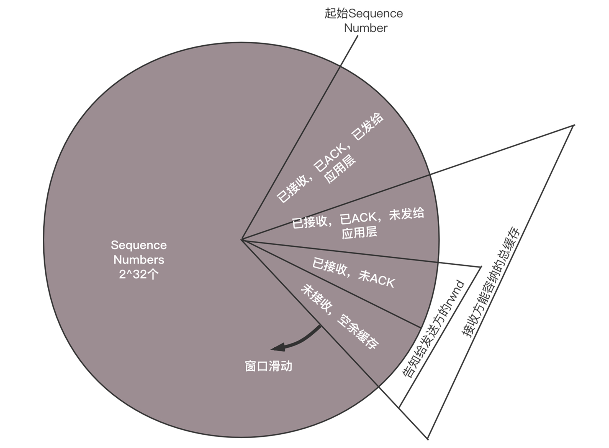

- 00 开篇词 想成为技术牛人？先搞定网络协议！.md.html
- 01 为什么要学习网络协议？.md.html
- 02 网络分层的真实含义是什么？.md.html
- 03 ifconfig：最熟悉又陌生的命令行.md.html
- 04 DHCP与PXE：IP是怎么来的，又是怎么没的？.md.html
- 05 从物理层到MAC层：如何在宿舍里自己组网玩联机游戏？.md.html
- 06 交换机与VLAN：办公室太复杂，我要回学校.md.html
- 07 ICMP与ping：投石问路的侦察兵.md.html
- 08 世界这么大，我想出网关：欧洲十国游与玄奘西行.md.html
- 09 路由协议：西出网关无故人，敢问路在何方.md.html
- 10 UDP协议：因性善而简单，难免碰到“城会玩”.md.html
- 11 TCP协议（上）：因性恶而复杂，先恶后善反轻松.md.html
- 12 TCP协议（下）：西行必定多妖孽，恒心智慧消磨难.md.html
- 13 套接字Socket：Talk is cheap, show me the code.md.html
- 14 HTTP协议：看个新闻原来这么麻烦.md.html
- 15 HTTPS协议：点外卖的过程原来这么复杂.md.html
- 16 流媒体协议：如何在直播里看到美女帅哥？.md.html
- 17 P2P协议：我下小电影，99%急死你.md.html
- 18 DNS协议：网络世界的地址簿.md.html
- 19 HttpDNS：网络世界的地址簿也会指错路.md.html
- 20 CDN：你去小卖部取过快递么？.md.html
- 21 数据中心：我是开发商，自己拿地盖别墅.md.html
- 22 VPN：朝中有人好做官.md.html
- 23 移动网络：去巴塞罗那，手机也上不了脸书.md.html
- 24 云中网络：自己拿地成本高，购买公寓更灵活.md.html
- 25 软件定义网络：共享基础设施的小区物业管理办法.md.html
- 26 云中的网络安全：虽然不是土豪，也需要基本安全和保障.md.html
- 27 云中的网络QoS：邻居疯狂下电影，我该怎么办？.md.html
- 28 云中网络的隔离GRE、VXLAN：虽然住一个小区，也要保护隐私.md.html
- 29 容器网络：来去自由的日子，不买公寓去合租.md.html
- 30 容器网络之Flannel：每人一亩三分地.md.html
- 31 容器网络之Calico：为高效说出善意的谎言.md.html
- 32 RPC协议综述：远在天边，近在眼前.md.html
- 33 基于XML的SOAP协议：不要说NBA，请说美国职业篮球联赛.md.html
- 34 基于JSON的RESTful接口协议：我不关心过程，请给我结果.md.html
- 35 二进制类RPC协议：还是叫NBA吧，总说全称多费劲.md.html
- 36 跨语言类RPC协议：交流之前，双方先来个专业术语表.md.html
- 37 知识串：用双十一的故事串起碎片的网络协议（上）.md.html
- 38 知识串：用双十一的故事串起碎片的网络协议（中）.md.html
- 39 知识串：用双十一的故事串起碎片的网络协议（下）.md.html
- 40 搭建一个网络实验环境：授人以鱼不如授人以渔.md.html
- 加餐1 创作故事：我是如何创作“趣谈网络协议”专栏的？.md.html
- 协议专栏特别福利 答疑解惑1期.md.html
- 协议专栏特别福利 答疑解惑2期.md.html
- 协议专栏特别福利 答疑解惑3期.md.html
- 协议专栏特别福利 答疑解惑4期.md.html
- 协议专栏特别福利 答疑解惑5期.md.html
- 结束语 放弃完美主义，执行力就是限时限量认真完成.md.html
- 捐赠
39 知识串：用双十一的故事串起碎片的网络协议（下）
上一节，我们封装了一个长长的网络包，“大炮”准备完毕，开始发送。
发送的时候可以说是重重关隘，从手机到移动网络、互联网，还要经过多个运营商才能到达数据中心，到了数据中心就进入第二个复杂的过程，从网关到VXLAN隧道，到负载均衡，到Controller层、组合服务层、基础服务层，最终才下单入库。今天，我们就来看这最后一段过程。
7.一座座城池一道道关，流控拥塞与重传
网络包已经组合完毕，接下来我们来看，如何经过一道道城关，到达目标公网IP。
对于手机来讲，默认的网关在PGW上。在移动网络里面，从手机到SGW，到PGW是有一条隧道的。在这条隧道里面，会将上面的这个包作为隧道的乘客协议放在里面，外面SGW和PGW在核心网机房的IP地址。网络包直到PGW（PGW是隧道的另一端）才将里面的包解出来，转发到外部网络。
所以，从手机发送出来的时候，网络包的结构为：
源MAC：手机也即UE的MAC；
目标MAC：网关PGW上面的隧道端点的MAC；
源IP：UE的IP地址；
目标IP：SLB的公网IP地址。
进入隧道之后，要封装外层的网络地址，因而网络包的格式为：
外层源MAC：E-NodeB的MAC；
外层目标MAC：SGW的MAC；
外层源IP：E-NodeB的IP；
外层目标IP：SGW的IP；
内层源MAC：手机也即UE的MAC；
内层目标MAC：网关PGW上面的隧道端点的MAC；
内层源IP：UE的IP地址；
内层目标IP：SLB的公网IP地址。
当隧道在SGW的时候，切换了一个隧道，会从SGW到PGW的隧道，因而网络包的格式为：
外层源MAC：SGW的MAC；
外层目标MAC：PGW的MAC；
外层源IP：SGW的IP；
外层目标IP：PGW的IP；
内层源MAC：手机也即UE的MAC；
内层目标MAC：网关PGW上面的隧道端点的MAC；
内层源IP：UE的IP地址；
内层目标IP：SLB的公网IP地址。
在PGW的隧道端点将包解出来，转发出去的时候，一般在PGW出外部网络的路由器上，会部署NAT服务，将手机的IP地址转换为公网IP地址，当请求返回的时候，再NAT回来。
因而在PGW之后，相当于做了一次[欧洲十国游型]的转发，网络包的格式为：
源MAC：PGW出口的MAC；
目标MAC：NAT网关的MAC；
源IP：UE的IP地址；
目标IP：SLB的公网IP地址。
在NAT网关，相当于做了一次[玄奘西游型]的转发，网络包的格式变成：
源MAC：NAT网关的MAC；
目标MAC：A2路由器的MAC；
源IP：UE的公网IP地址；
目标IP：SLB的公网IP地址。

出了NAT网关，就从核心网到达了互联网。在网络世界，每一个运营商的网络成为自治系统AS。每个自治系统都有边界路由器，通过它和外面的世界建立联系。
对于云平台来讲，它可以被称为Multihomed AS，有多个连接连到其他的AS，但是大多拒绝帮其他的AS传输包。例如一些大公司的网络。对于运营商来说，它可以被称为Transit AS，有多个连接连到其他的AS，并且可以帮助其他的AS传输包，比如主干网。
如何从出口的运营商到达云平台的边界路由器？在路由器之间需要通过BGP协议实现，BGP又分为两类，eBGP和iBGP。自治系统之间、边界路由器之间使用eBGP广播路由。内部网络也需要访问其他的自治系统。
边界路由器如何将BGP学习到的路由导入到内部网络呢？通过运行iBGP，使内部的路由器能够找到到达外网目的地最好的边界路由器。
网站的SLB的公网IP地址早已经通过云平台的边界路由器，让全网都知道了。于是这个下单的网络包选择的下一跳是A2，也即将A2的MAC地址放在目标MAC地址中。
到达A2之后，从路由表中找到下一跳是路由器C1，于是将目标MAC换成C1的MAC地址。到达C1之后，找到下一跳是C2，将目标MAC地址设置为C2的MAC。到达C2后，找到下一跳是云平台的边界路由器，于是将目标MAC设置为边界路由器的MAC地址。
你会发现，这一路，都是只换MAC，不换目标IP地址。这就是所谓下一跳的概念。
在云平台的边界路由器，会将下单的包转发进来，经过核心交换，汇聚交换，到达外网网关节点上的SLB的公网IP地址。
我们可以看到，手机到SLB的公网IP，是一个端到端的连接，连接的过程发送了很多包。所有这些包，无论是TCP三次握手，还是HTTPS的密钥交换，都是要走如此复杂的过程到达SLB的，当然每个包走的路径不一定一致。
网络包走在这个复杂的道路上，很可能一不小心就丢了，怎么办？这就需要借助TCP的机制重新发送。
既然TCP要对包进行重传，就需要维护Sequence Number，看哪些包到了，哪些没到，哪些需要重传，传输的速度应该控制到多少，这就是TCP的滑动窗口协议。

整个TCP的发送，一开始会协商一个Sequence Number，从这个Sequence Number开始，每个包都有编号。滑动窗口将接收方的网络包分成四个部分：
已经接收，已经ACK，已经交给应用层的包；
已经接收，已经ACK，未发送给应用层；
已经接收，尚未发送ACK；
未接收，尚有空闲的缓存区域。
对于TCP层来讲，每一个包都有ACK。ACK需要从SLB回复到手机端，将上面的那个过程反向来一遍，当然路径不一定一致，可见ACK也不是那么轻松的事情。
如果发送方超过一定的时间没有收到ACK，就会重新发送。只有TCP层ACK过的包，才会发给应用层，并且只会发送一份，对于下单的场景，应用层是HTTP层。
你可能会问了，TCP老是重复发送，会不会导致一个单下了两遍？是否要求服务端实现幂等？从TCP的机制来看，是不会的。只有收不到ACK的包才会重复发，发到接收端，在窗口里面只保存一份，所以在同一个TCP连接中，不用担心重传导致二次下单。
但是TCP连接会因为某种原因断了，例如手机信号不好，这个时候手机把所有的动作重新做一遍，建立一个新的TCP连接，在HTTP层调用两次RESTful API。这个时候可能会导致两遍下单的情况，因而RESTful API需要实现幂等。
当ACK过的包发给应用层之后，TCP层的缓存就空了出来，这会导致上面图中的大三角，也即接收方能够容纳的总缓存，整体顺时针滑动。小的三角形，也即接收方告知发送方的窗口总大小，也即还没有完全确认收到的缓存大小，如果把这些填满了，就不能再发了，因为没确认收到，所以一个都不能扔。
8.从数据中心进网关，公网NAT成私网
包从手机端经历千难万险，终于到了SLB的公网IP所在的公网网口。由于匹配上了MAC地址和IP地址，因而将网络包收了进来。

在虚拟网关节点的外网网口上，会有一个NAT规则，将公网IP地址转换为VPC里面的私网IP地址，这个私网IP地址就是SLB的HAProxy所在的虚拟机的私网IP地址。
当然为了承载比较大的吞吐量，虚拟网关节点会有多个，物理网络会将流量分发到不同的虚拟网关节点。同样HAProxy也会是一个大的集群，虚拟网关会选择某个负载均衡节点，将某个请求分发给它，负载均衡之后是Controller层，也是部署在虚拟机里面的。
当网络包里面的目标IP变成私有IP地址之后，虚拟路由会查找路由规则，将网络包从下方的私网网口发出来。这个时候包的格式为：
源MAC：网关MAC；
目标MAC：HAProxy虚拟机的MAC；
源IP：UE的公网IP；
目标IP：HAProxy虚拟机的私网IP。
9.进入隧道打标签，RPC远程调用下单
在虚拟路由节点上，也会有OVS，将网络包封装在VXLAN隧道里面，VXLAN ID就是给你的租户创建VPC的时候分配的。包的格式为：
外层源MAC：网关物理机MAC；
外层目标MAC：物理机A的MAC；
外层源IP：网关物理机IP；
外层目标IP：物理机A的IP；
内层源MAC：网关MAC；
内层目标MAC：HAProxy虚拟机的MAC；
内层源IP：UE的公网IP；
内层目标IP：HAProxy虚拟机的私网IP。
在物理机A上，OVS会将包从VXLAN隧道里面解出来，发给HAProxy所在的虚拟机。HAProxy所在的虚拟机发现MAC地址匹配，目标IP地址匹配，就根据TCP端口，将包发给HAProxy进程，因为HAProxy是在监听这个TCP端口的。因而HAProxy就是这个TCP连接的服务端，客户端是手机。对于TCP的连接状态、滑动窗口等，都是在HAProxy上维护的。
在这里HAProxy是一个四层负载均衡，也即它只解析到TCP层，里面的HTTP协议它不关心，就将请求转发给后端的多个Controller层的一个。
HAProxy发出去的网络包就认为HAProxy是客户端了，看不到手机端了。网络包格式如下：
源MAC：HAProxy所在虚拟机的MAC；
目标MAC：Controller层所在虚拟机的MAC；
源IP：HAProxy所在虚拟机的私网IP；
目标IP：Controller层所在虚拟机的私网IP。
当然这个包发出去之后，还是会被物理机上的OVS放入VXLAN隧道里面，网络包格式为：
外层源MAC：物理机A的MAC；
外层目标MAC：物理机B的MAC；
外层源IP：物理机A的IP；
外层目标IP：物理机B的IP；
内层源MAC：HAProxy所在虚拟机的MAC；
内层目标MAC：Controller层所在虚拟机的MAC；
内层源IP：HAProxy所在虚拟机的私网IP；
内层目标IP：Controller层所在虚拟机的私网IP。
在物理机B上，OVS会将包从VXLAN隧道里面解出来，发给Controller层所在的虚拟机。Controller层所在的虚拟机发现MAC地址匹配，目标IP地址匹配，就根据TCP端口，将包发给Controller层的进程，因为它在监听这个TCP端口。
在HAProxy和Controller层之间，维护一个TCP的连接。
Controller层收到包之后，它是关心HTTP里面是什么的，于是解开HTTP的包，发现是一个POST请求，内容是下单购买一个课程。
10.下单扣减库存优惠券，数据入库返回成功
下单是一个复杂的过程，因而往往在组合服务层会有一个专门管理下单的服务，Controller层会通过RPC调用这个组合服务层。
假设我们使用的是Dubbo，则Controller层需要读取注册中心，将下单服务的进程列表拿出来，选出一个来调用。
Dubbo中默认的RPC协议是Hessian2。Hessian2将下单的远程调用序列化为二进制进行传输。
Netty是一个非阻塞的基于事件的网络传输框架。Controller层和下单服务之间，使用了Netty的网络传输框架。有了Netty，就不用自己编写复杂的异步Socket程序了。Netty使用的方式，就是咱们讲[Socket编程]的时候，一个项目组支撑多个项目（IO多路复用，从派人盯着到有事通知）这种方式。
Netty还是工作在Socket这一层的，发送的网络包还是基于TCP的。在TCP的下层，还是需要封装上IP头和MAC头。如果跨物理机通信，还是需要封装的外层的VXLAN隧道里面。当然底层的这些封装，Netty都不感知，它只要做好它的异步通信即可。
在Netty的服务端，也即下单服务中，收到请求后，先用Hessian2的格式进行解压缩。然后将请求分发到线程中进行处理，在线程中，会调用下单的业务逻辑。
下单的业务逻辑比较复杂，往往要调用基础服务层里面的库存服务、优惠券服务等，将多个服务调用完毕，才算下单成功。下单服务调用库存服务和优惠券服务，也是通过Dubbo的框架，通过注册中心拿到库存服务和优惠券服务的列表，然后选一个调用。
调用的时候，统一使用Hessian2进行序列化，使用Netty进行传输，底层如果跨物理机，仍然需要通过VXLAN的封装和解封装。
咱们以库存为例子的时候，讲述过幂等的接口实现的问题。因为如果扣减库存，仅仅是谁调用谁减一。这样存在的问题是，如果扣减库存因为一次调用失败，而多次调用，这里指的不是TCP多次重试，而是应用层调用的多次重试，就会存在库存扣减多次的情况。
这里常用的方法是，使用乐观锁（Compare and Set，简称CAS）。CAS要考虑三个方面，当前的库存数、预期原来的库存数和版本，以及新的库存数。在操作之前，查询出原来的库存数和版本，真正扣减库存的时候，判断如果当前库存的值与预期原值和版本相匹配，则将库存值更新为新值，否则不做任何操作。
这是一种基于状态而非基于动作的设计，符合RESTful的架构设计原则。这样的设计有利于高并发场景。当多个线程尝试使用CAS同时更新同一个变量时，只有其中一个线程能更新变量的值，而其它线程都失败，失败的线程并不会被挂起，而是被告知这次竞争中失败，并可以再次尝试。
最终，当下单更新到分布式数据库中之后，整个下单过程才算真正告一段落。
好了，经过了十个过程，下单终于成功了，你是否对这个过程了如指掌了呢？如果发现对哪些细节比较模糊，可以回去看一下相应的章节，相信会有更加深入的理解。
到此，我带着你用下单过程把网络协议的知识都复习了一遍。授人以鱼不如授人以渔。下一节，我将会带你来搭建一个网络实验环境，配合实验来说明理论。
欢迎你留言和我讨论。趣谈网络协议，我们下期见！
© 2019 - 2023 Liangliang Lee. Powered by gin and hexo-theme-book.